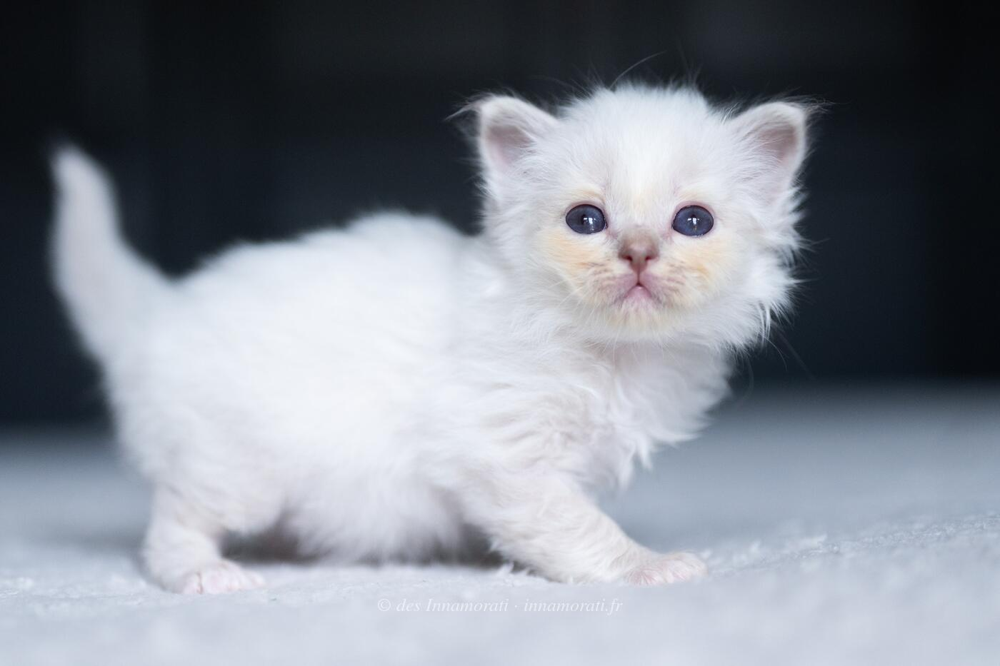

RobeFemelle · Lilac tabby point
ParentsSanae des Innamorati × Bacckara's Bellamy
StatutAdoptée
Album5 photos, de juillet 2023 à décembre 2024


Photos réduites et marquées. Elles appartiennent à la Chatterie des Innamorati et ne peuvent pas être reprises dans une annonce.